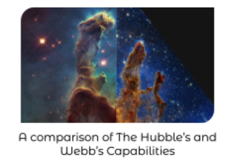

One of Webb’s amazing purposes is to capture jaw-dropping photos of supernovas and pictures of space.

This is a photo from Webb's Near-InfraRed Camera of the supernova RX J2129. Strangely, the phenomenon showcases a stunning three replicas of the supernova! This strange occurrence is often found when brightness and spacetime curvature reaches an excess amount. Spacetime Curvature is the massive influence of large objects in space. Because these objects are so large, the gravity emitted by them is so intense, it has strange effects on human technology. The RX J2129 is a whooping 3.2 billion light-years away from Earth! Originally, the supernova was discovered by the Hubble Telescope, though photo quality was not very impressive, and they could not collect sufficient samples, but when the James Webb Telescope came around, stunning images were produced.
This is Called the Phantom Galaxy. It is 32 million light years away from where we stand. It is also known as “M74” to scientists. The enormous galaxy appears to man-kind at a large delay, due to how many light-years separate M74 is from Earth. The stunning image displayed here
was captured by The James Webb Telescope.
As this article (hopefully) concludes, we were aiming for an amazing display of The James Webb’s powerful capturing abilities to further get across how much the Webb telescope was an upgrade from its previous generation, the Hubble telescope, and how much mankind is going to be affected by this miraculous creation.